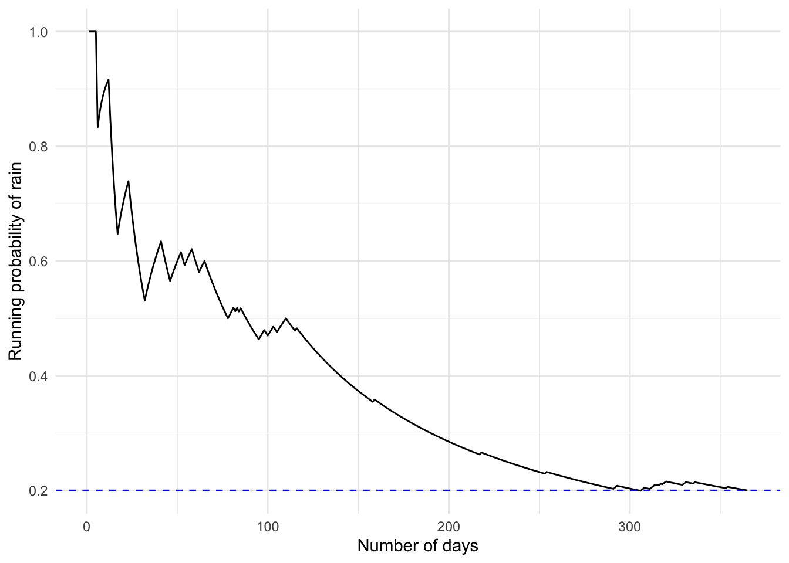
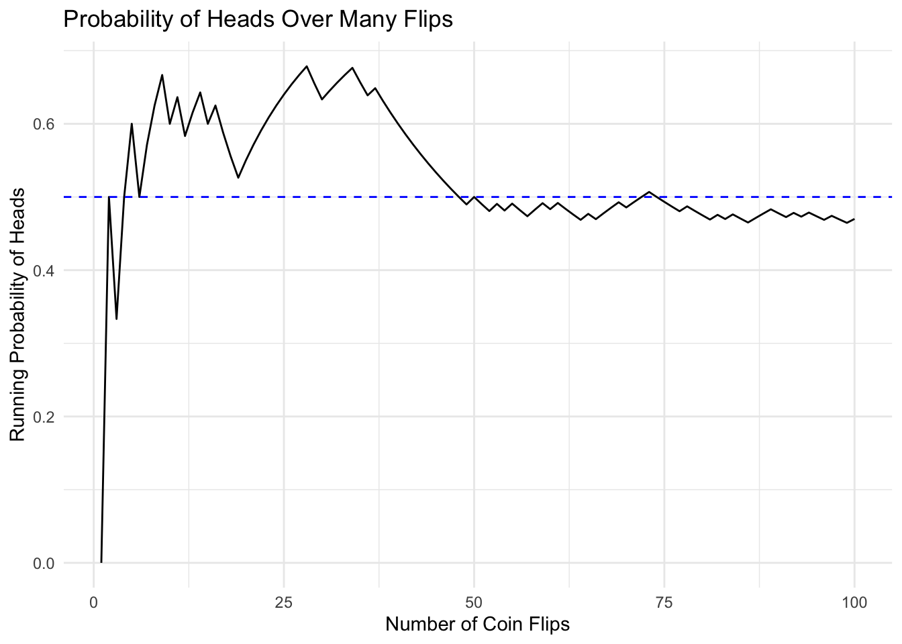
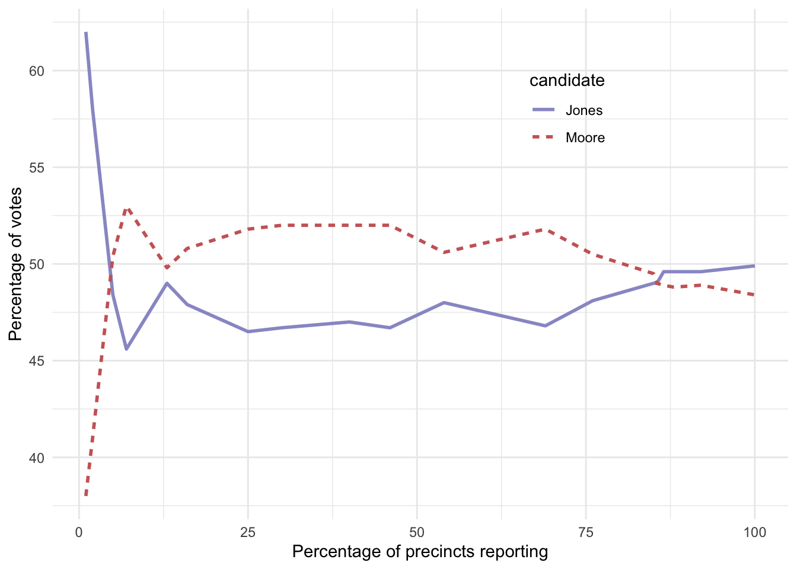

Determining Probabilities
Three Approaches
-
Personal Belief
- Subjective assessment
- Based on knowledge/experience
- Limited scientific validity
- Often only available approach
-
Empirical Frequency
- Based on repeated experiments
- Law of large numbers
- Real-world data collection
-
Classical Probability
- Based on equally likely outcomes
- Mathematical approach
- Common in games of chance
- No experiments needed
Now that we know what a probability is, how do we actually figure out what the probability is for any particular event? There are three main approaches, each with their own strengths and limitations.
Personal Belief
Example Question:
What was the probability that Bernie Sanders would have won the 2016 presidential election if he had been the democratic nominee?
Key Points:
- Can’t run this experiment
- People can still estimate based on knowledge
- Not scientifically satisfying
- Often the only available approach
Other Examples:
- Weather forecasts
- Sports predictions
- Economic forecasts
- Personal decisions
Let’s say that I asked you what the probability was that Bernie Sanders would have won the 2016 presidential election if he had been the democratic nominee instead of Hilary Clinton? We can’t actually do the experiment to find the outcome. However, most people with knowledge of American politics would be willing to at least offer a guess at the probability of this event. In many cases personal knowledge and/or opinion is the only guide we have determining the probability of an event, but this is not very scientifically satisfying.
Empirical Frequency
San Francisco Rain Example:
- Total days in 2017: 365
- Rainy days: 73
- P(rain in SF) = 73/365 = 0.2
Key Steps:
- Define experiment clearly
- Count occurrences
- Divide by total trials
Another way to determine the probability of an event is to do the experiment many times and count how often each event happens. From the relative frequency of the different outcomes, we can compute the probability of each outcome. For example, let’s say that we are interested in knowing the probability of rain in San Francisco. We first have to define the experiment — let’s say that we will look at the National Weather Service data for each day in 2017 and determine whether there was any rain at the downtown San Francisco weather station. According to these data, in 2017 there were 73 rainy days. To compute the probability of rain in San Francisco, we simply divide the number of rainy days by the number of days counted (365), giving P(rain in SF in 2017) = 0.2.
The graph shows how the empirical probability of rain converges to 0.2 as we accumulate more days of data throughout the year.
Law of Large Numbers
Coin Flip Example:
- True probability of heads = 0.5
- Small samples vary widely
- More flips = better estimate
- Converges to true probability
- “Law of small numbers” fallacy

The graph shows how early results from coin flips can be highly variable and unrepresentative of the true value. Even though we know a fair coin has a probability of 0.5 for heads, small samples can give very different results. This demonstrates how small samples can give misleading results.
This was referred to as the “law of small numbers” by psychologists Danny Kahneman and Amos Tversky, who showed that people (even trained researchers) often behave as if the law of large numbers applies even to small samples, leading them to draw strong conclusions from insufficient data.
Real-World Example: Alabama Election
2017 Senate Race:
- Roy Moore vs Doug Jones
- Early results volatile
- Final outcome different
- Small sample warning

A real-world example of this was seen in the 2017 special election for the US Senate in Alabama. Early in the evening the vote counts were especially volatile, swinging from a large initial lead for Jones to a long period where Moore had the lead, until finally Jones took the lead to win the race.
This demonstrates how small samples can give misleading results. Unfortunately, many people forget this and overinterpret results from small samples.